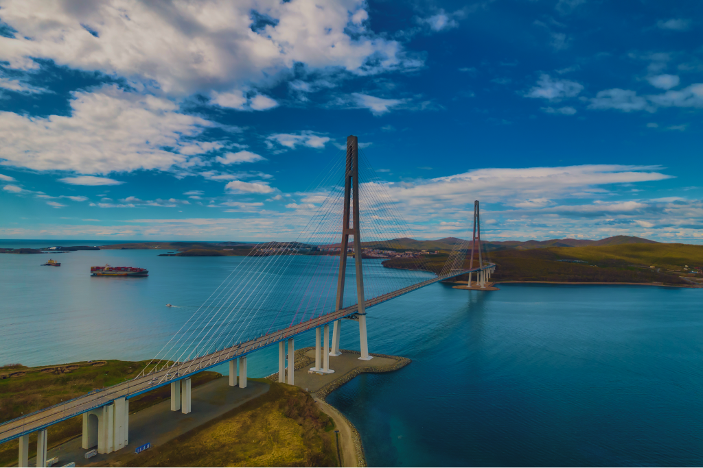
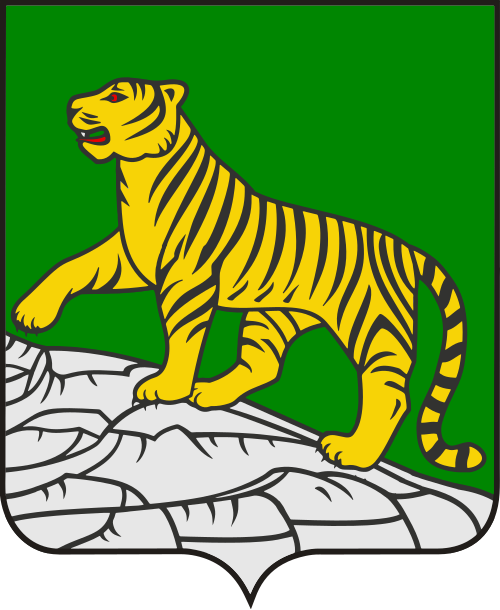
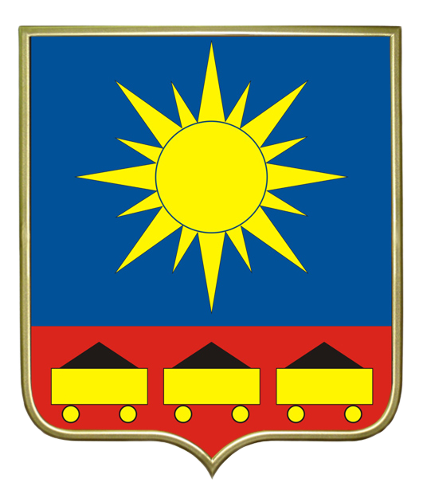
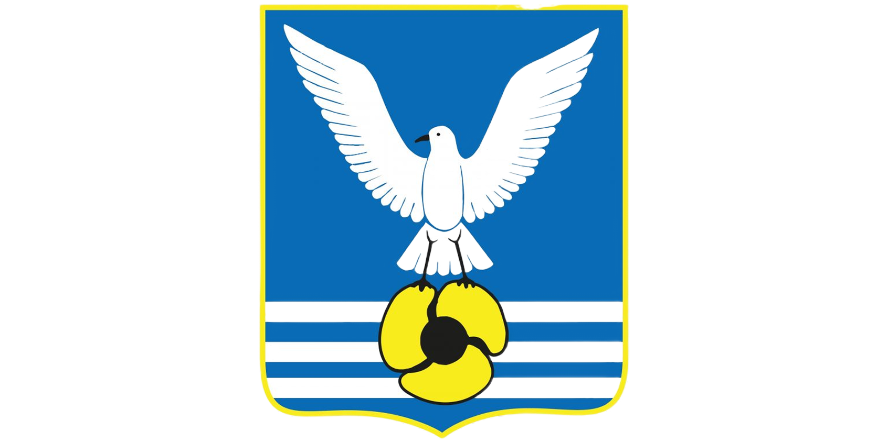
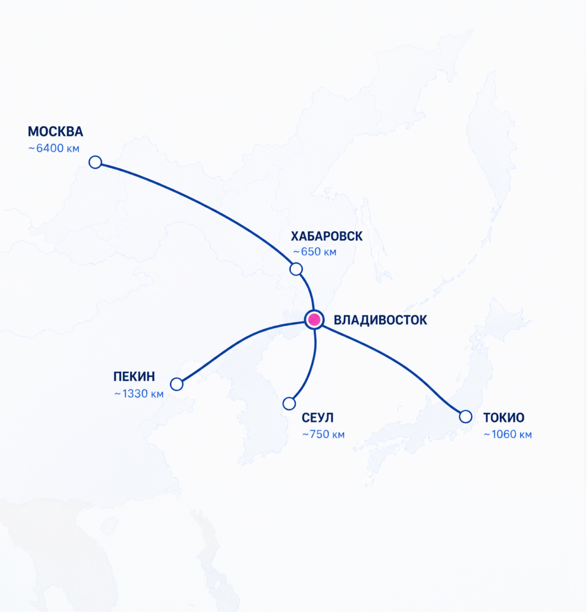
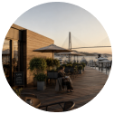

Мастер-планы агломерации
Владивосток
Выберите территорию, чтобы изучить её мастер-план.

выбрано
Владивосток
и остров Русский
Морской, административный, научный, образовательный и туристический центр.


Артем
Город аэропорта, промышленности и новых жилых территорий.


Большой камень
Центр судостроения, производства и развития морской промышленности.

Владивосток
Сопки, туманы, вантовые мосты над океанскими бухтами и старый китайский квартал в центре — Владивосток не зря называют русским Сан-Франциско, его города-побратима. Только здесь этот характер не заимствованный, а свой, тихоокеанский.
населения 628.4тыс. чел.
городской среды
на 2024г.* 205баллов
*0- неблагоприятная городская среда, 360 - максимально благоприятная городская среда (данные сайта индекс-городов.рф)

Миссия города
Владивосток — морские ворота России в Азиатско-Тихоокеанский регион
01
Владивосток — административный центр Приморского края и крупнейший морской город Дальнего Востока. Он расположен на полуострове Муравьёва-Амурского и островах залива Петра Великого, на побережье Японского моря.
02
Город объединяет портовую экономику, международную торговлю, образование, науку, туризм и высокотехнологичные отрасли.
03
Город занимает стратегическое положение между Россией и странами Азиатско-Тихоокеанского региона. Здесь завершается Транссибирская магистраль, действует крупнейший морской порт и расположен международный аэропорт Владивосток.


Стратегическое положение
- Транспортная магистраль
- Федеральная трасса Байкал
- Международный аэропорт Байкал
- Связь с Китаем, Монголией, Кореей
Масштаб преобразований
Ключевые проекты развития Владивостока

Нажмите на проект
на карте, чтобы
увидеть подробности
на карте, чтобы
увидеть подробности

КРТ в районе мыса
Кунгасного
Комфортная жилая застройка по стандарту ДОМ.РФ, парк, пешеходный мост, культурный и спортивный центр, социальная инфраструктура.
94.22 гаплощадь участка проектирования
130.5 млрд ₽инвестиций
924,4 тыс. м²общая площадь застройки
Что появится
- Строительство 4 ЖК, гостиничного комплекса и 2 общественно-деловых объектов (2,9 га)
- Пешеходный мост через реку Улу
- Культурный и спортивный центр
- Жильё по стандарту ДОМ.РФ